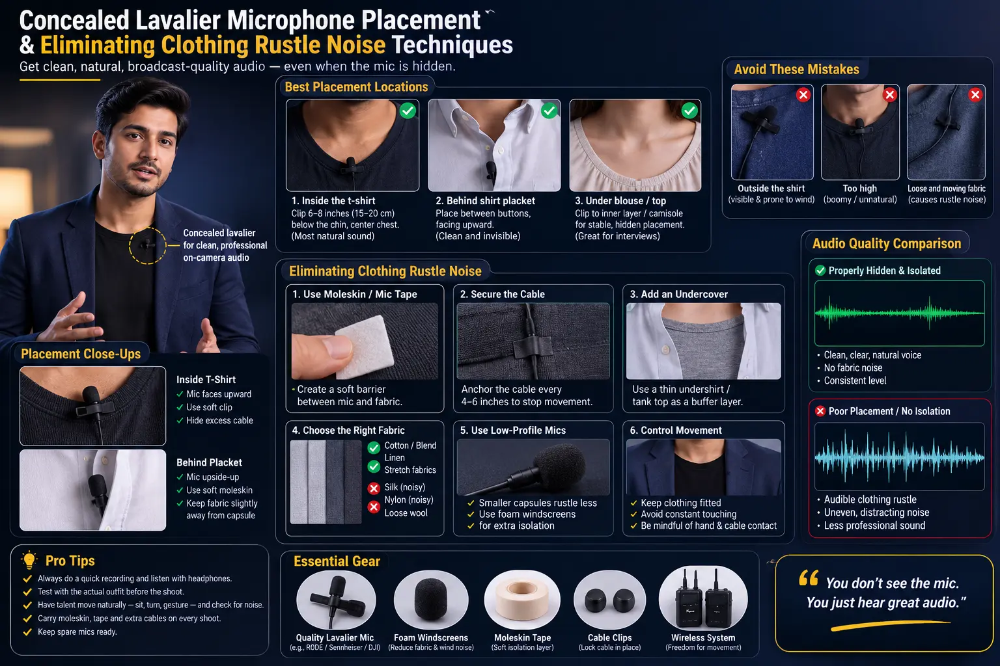
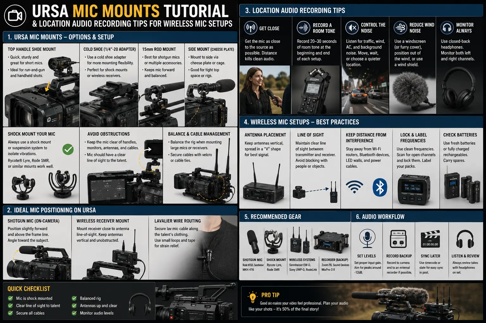

Advanced Miking Techniques for High-Movement Visual Shoots
The Hidden Audio Challenge of Dynamic Cinematography
Modern commercial video production has shifted dramatically toward hyper-dynamic visual storytelling. Today's commercial directors, brand cinematographers, and content creators rely on fast gimbal passes, tracking vehicle shots, athletic talent movements, and immersive walk-and-talk sequences to captivate audiences. However, while visual camera technology has evolved to handle extreme motion with ease, sound capture remains bound by physical acoustic laws. When an actor or presenter is sprinting, dancing, gesturing vigorously, or navigating crowded outdoor environments, traditional overhead boom microphones become impossible to position safely or consistently within the pickup pattern.
In dynamic visual environments, Concealed Lavalier Microphone Placement becomes the absolute backbone of field sound engineering. Hiding miniature microphone capsules underneath clothing allows the camera team complete freedom to shoot 360-degree wide angles and rapid tracking maneuvers without mic booms dipping into frame. Yet, concealing a body-worn microphone on an active subject introduces a fierce technical adversary: physical friction. Every time wardrobe fabric slides across skin or rubs against a microphone capsule, it generates devastating low-frequency mechanical noise that ruins dialogue tracks. Mastering the art of Eliminating Clothing Rustle Noise is what separates amateur videography from broadcast-ready commercial production.
For brands seeking high-end commercial execution, achieving crisp dialogue capture is not merely a luxury—it is an absolute prerequisite for effective post-production sound assembly. In modern Product Sound Design Videography, vocal tracks must be isolated cleanly so that sound engineers can weave intricate Foley effects, spatial acoustic textures, and driving musical beds around the voice. In this comprehensive guide, we unpack the professional field protocols, specialized mounting hardware, and acoustic isolation techniques needed to record flawless dialogue during high-movement video shoots.
Understanding the Physics of Clothing Friction & Cable Noise
To solve the problem of audio distortion during movement, audio engineers must first understand how mechanical noise enters a lavalier capsule. When a person moves, wardrobe items experience friction at multiple contact points. This mechanical energy translates into acoustic noise through three primary mechanisms:
- Direct Capsule Surface Friction: When fabric slides directly across the grid or diaphragm of a lavalier microphone, it produces high-frequency scratching and abrasive scraping sounds. Synthetic fabrics like polyester, nylon, and silk produce intense high-frequency rustle, whereas natural cotton and wool tend to create lower-frequency thuds.
- Acoustic Cavity Compression: Placing a microphone underneath thick layers of tight clothing creates a miniature resonant chamber. As the actor moves or breathes deeply, the air pressure inside this micro-cavity shifts rapidly, creating low-frequency boominess and muffled frequency response that destroys vocal intelligibility.
- Cable Mechanical Slap (Structure-Borne Noise): As the actor runs or jumps, the microphone cable whips against their body or wardrobe layers. Vibration travels up the copper wire directly into the microphone capsule housing, registering as harsh thumps and mechanical clicks in the recorded track.
Understanding these friction dynamics is critical when mastering preventing lav mic rustle. Sound recordists cannot simply tape a lavalier inside a shirt and hope for clean results. Instead, they must employ systematic acoustic isolation, decoupling the mic capsule from both the inner skin layer and the outer clothing layer.
Mastering Concealed Lavalier Microphone Placement: Step-by-Step Techniques
Learning How to hide lavalier mics under clothes requires an understanding of wardrobe geometry, human anatomy, and acoustic transparency. The goal is to position the microphone capsule in an anatomical "dead zone"—a spot on the human body where wardrobe fabric naturally floats slightly off the skin during movement, minimizing direct friction.
Here are the industry's most reliable anatomical placement zones for high-movement talent:
- The Center Sternum (The Golden Triangle): The center of the chest between the pectoral muscles offers the ideal balance of voice chest resonance and minimal fabric drag. Wardrobe jackets, dress shirts, and t-shirts naturally bridge across the chest, creating a natural acoustic cavity where a capsule can hover without touching moving fabric.
- Inside the Collarbone / V-Neck Seam: For actors wearing open-collar shirts or V-neck tops, mounting the capsule directly underneath the inner collar seam keeps the mic omnidirectional grid facing the chin while using the heavy stitched seam as a protective shield against fabric movement.
- The Button-Down Placket Sandwich: In business attire or casual button-downs, the space between two buttons along the front placket provides an exceptional mounting channel. By placing the microphone inside the double-layered fabric fold of the placket, the stiff material shields the mic capsule from outer jacket friction.
- Under-Collar & Tie Knot Placement: When shooting formal business footage or corporate films, hiding a micro-lavalier inside the underside fold of a shirt collar or deep within the rear knot of a necktie offers complete visual invisibility and direct line-of-sight to the speaker's vocal tract.
Regardless of placement, sound engineers must account for the high-frequency attenuation caused by fabric layers. Heavy denim or wool can reduce frequencies above 5kHz by up to 6dB. Utilizing omnidirectional lavalier capsules with boost grids (such as the Sanken COS-11D or DPA 6060) compensates for fabric damping and restores high-frequency sparkle to the dialogue.
Zero Visual Footprint
Mastering Concealed Lavalier Microphone Placement allows cinematographers 360 degrees of framing freedom without worrying about visible clips, cables, or intrusive boom shadows.
Acoustic Decoupling
Advanced mounting techniques excel at Eliminating Clothing Rustle Noise and preventing lav mic rustle even during aggressive physical stunts and running shots.
Unrestricted Talent Mobility
Reliable wireless mic setups for video give presenters and actors total confidence to move naturally without pulling cables or stepping out of pickup patterns.
Post-Production Clarity
Achieving crisp dialogue capture provides sound designers with immaculate vocal stems essential for multi-layered Product Sound Design Videography.

URSA Mic Mounts & Specialized Hardware Guide
In recent years, specialized audio accessories have revolutionized wardrobe miking. Gone are the days of wrapping microphones in bulky gaffer tape and hoping for the best. Today, professional location sound recordists rely on engineered silicone mounts, fur covers, and hypoallergenic adhesives.
This step-by-step URSA mic mounts tutorial outlines how location sound mixers prepare capsules for intense action shoots:
- Silicone MiniMount Isolation: URSA MiniMounts are ultra-thin, flexible silicone covers molded precisely to fit popular lavalier models like the Sanken COS-11D, DPA 4060/6060, Sennheiser MKE2, and Røde Lavalier II. The silicone sleeve acts as a physical buffer: fabric glides smoothly across the outer silicone surface without pressing down on the mic capsule's sensitive diaphragm.
- Applying Hypoallergenic Moleskin Tape: To mount the MiniMount, sound mixers apply URSA Stickies or hypoallergenic moleskin tape to both sides of the silicone housing. One side adheres firmly to the actor's chest skin or undershirt, while the outer side holds the clothing layer slightly away from the capsule cavity.
- Fur Overcovers for Wind & Friction Damping: When shooting outdoors in high-wind conditions or underneath noisy synthetic jackets, adding an URSA Plushie or Rycote Overcover over the mic capsule absorbs kinetic energy from moving fabric while diffusing air turbulence. The soft synthetic fur fibers act as acoustic shock absorbers.
- Creating Cable Strain Relief Loops: Cable rustle is effectively eliminated by creating a small "C-loop" or "Bight" in the microphone wire approximately two inches below the capsule. Taping this loop securely to the talent's chest with medical tape ensures that any tension or tugging on the transmitter cable terminates at the loop, preventing mechanical vibration from traveling up to the mic head.
RF Stability & Wireless Transmitter Engineering
Hiding the microphone capsule is only half the battle; transmitting that audio signal cleanly back to the recorder requires robust RF management. High-movement shoots present severe wireless challenges: body shielding occurs when an actor turns their back to the receiver, while sudden physical movement can displace transmitter antennas against sweaty skin.
To ensure dropout-free performance, sound teams rely on optimized wireless mic setups for video:
- Dedicated Bodypack Straps: Instead of clipping heavy transmitters onto belt loops where they can bounce or slide off during action shots, recordists use neoprene URSA waist belts, thigh straps, or ankle straps. These straps hold the transmitter snug against the body, protecting the unit while maintaining constant antenna orientation.
- Antenna Isolation & Body Spacing: Direct skin contact can detune a bodypack transmitter antenna, dropping RF transmission power by up to 50%. Using insulated antenna caps or routing the antenna through dedicated strap pockets prevents sweat contact and maintains full RF output power.
- Frequency Scanning & Intermodulation Avoidance: On complex commercial sets with multiple wireless lavaliers, wireless monitors (IEMs), and wireless focus pullers, recordists execute digital RF spectrum scans before every scene. Selecting clean, non-interfering frequency blocks ensures pristine audio delivery across long distances.
- Transmitter Gain Staging & Limiter Setup: Athletic movement often produces dramatic dynamic vocal ranges—from quiet whispers while creeping to loud shouts during high-action sequences. Setting proper transmitter input gain and engaging analog or ultra-fast digital limiters prevents digital clipping at the bodypack stage.
Top Location Audio Recording Tips for Complex Environments
Achieving broadcast-quality sound on active commercial locations requires disciplined production workflows. Here are proven location audio recording tips that professional sound engineers follow on high-stakes shoots:
- Pre-Rig Wardrobe During Fitting Days: Never wait until the camera is rolling to test microphone mounting. Work with the wardrobe stylist during pre-production fittings to identify mic placement spots, test fabric rustle noise, and sew hidden mic loops or acoustic mesh panels into costume linings if necessary.
- Deploy Secondary Safety Track Protocols: When recording dynamic vocal performances, recordists set dual-level recording or leverage 32-bit float audio recorders (such as Sound Devices Scorpio or Zoom F8N Pro). 32-bit float capturing provides infinite dynamic head-room, eliminating digital clipping even if an actor screams unexpectedly.
- Utilize Plant Microphones in Action Zones: For extreme physical stunts where body-worn mics might risk damage or excessive impact noise, place boundary plant mics (such as boundary lavaliers or hidden boundary condensers) inside vehicle interiors, furniture, or props near the action zone.
- Maintain Wireless Timecode Synchronization: Syncing multi-camera footage with body-worn audio tracks can become a post-production nightmare on high-movement shoots. Equipping every camera body and field audio recorder with wireless timecode boxes (such as Tentacle Sync E or Deity TC-1) guarantees frame-accurate auto-sync in editing suites.
Action & Commercial Shoots
- Extreme movement, athletic demonstrations, and fast gimbal tracking shots.
- Dual-layer URSA MiniMount isolation with fur overcovers to eliminate extreme wind turbulence and high-velocity fabric slap.
- Neoprene thigh and chest harnesses to lock down wireless bodypacks during flips, runs, and stunts.
- 32-bit float recording protocols to capture explosive dynamic range without distortion.
Documentaries & Walking Interviews
- Unscripted walking-and-talking shots in unpredictable public environments.
- Sternum and placket mounting for rapid setup on non-professional interview subjects.
- RF spectrum scanning to navigate hostile urban wireless interference zones.
- Subtle high-frequency EQ compensation tailored to heavy winter coats or casual streetwear.
Corporate & Brand Storytelling
- Executive walkthroughs, factory floor tours, and high-ticket commercial production in Madurai.
- Concealed lavalier placement under formal suits, ties, and silk blouses.
- Acoustic decoupling methods that preserve warm vocal presence without bulky chest lumps.
- Seamless integration with background music beds and custom sonic branding elements.

Integrating Clean Audio with Product Sound Design Videography
In the modern digital landscape, video content is consumed across mobile screens, smart TVs, and theatrical setups. Achieving crisp dialogue capture is the baseline, but elevating a commercial into an unforgettable brand film requires weaving dialogue seamlessly into post-production sound design.
When dialogue stems are free from clothing rustle, room echo, and wind noise, sound designers possess the clean sonic canvas required for Product Sound Design Videography. Post-production mixers can slice vocal tracks, apply spatial reverb, and layer custom Foley sound effects—such as tactile product clicks, fabric rustles, and cinematic swooshes—without amplifying background noise or phase artifacts. Clean audio transforms visual promotional videos into multi-sensory brand experiences that drive emotional connection, brand recall, and customer conversions.
Conclusion
Capturing pristine dialogue on high-movement visual shoots is an art form grounded in physics, specialized gear, and field experience. By mastering Concealed Lavalier Microphone Placement, leveraging an URSA mic mounts tutorial workflow, and implementing rigorous location audio recording tips for wireless mic setups for video, video production teams can overcome fabric friction and capture studio-quality voice tracks anywhere.
Whether you are filming high-energy sports commercials, executive corporate films, or cinematic product videos, committing to Eliminating Clothing Rustle Noise and preventing lav mic rustle ensures that your visual storytelling is matched by uncompromising sonic excellence.
At The PhD Ads in Madurai, we combine state-of-the-art camera movement techniques with broadcast-grade field audio engineering. Our team specializes in Product Sound Design Videography, location sound capture, and high-impact commercial video creation tailored to help ambitious brands stand out.
Key Topics
Ready to Capture Pristine Dialogue on High-Movement Video Shoots?
Partner with The PhD Ads in Madurai for professional commercial video production, concealed miking expertise, and world-class product sound design videography. Let's make your next video campaign sound as incredible as it looks.
Email: team@e2o.in